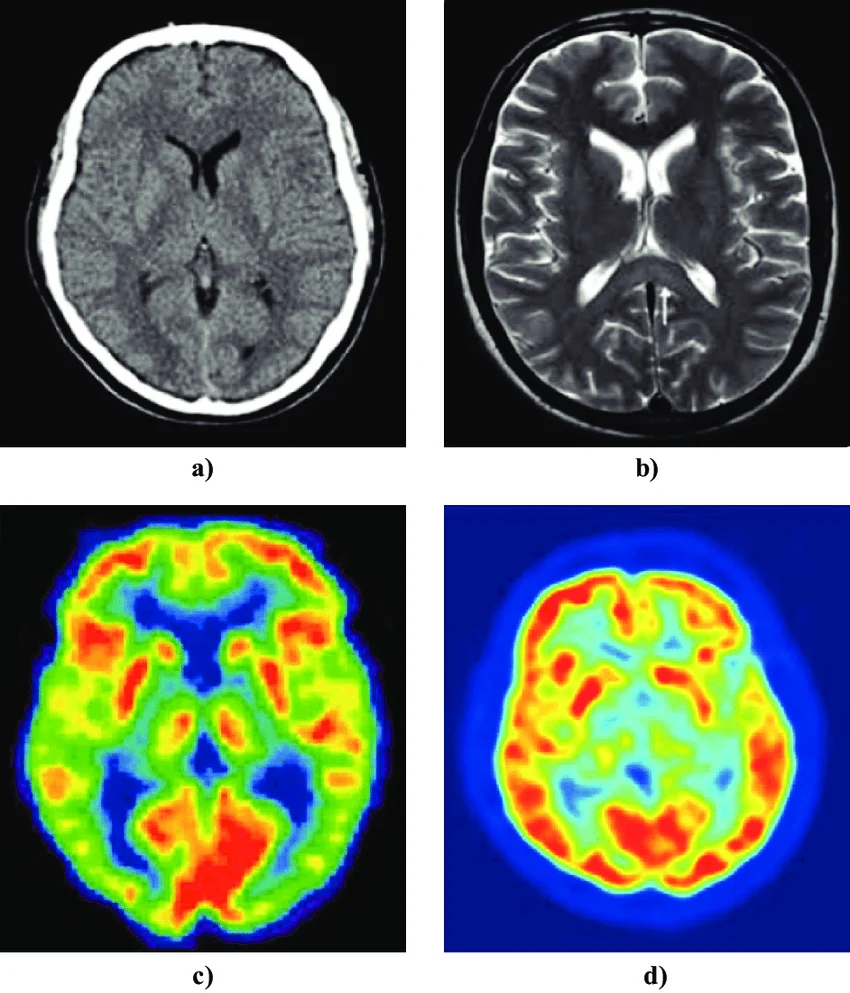
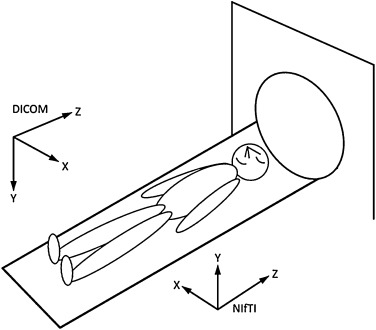

flowchart LR
A[Equipo de adquisición<br/>CT / MRI / PET / RX] --> B[Formato DICOM]
B --> C{Preprocesamiento}
C -->|Conversión| D[Formato NIfTI]
C --> E[SimpleITK<br/>Lectura / Registro / Filtrado]
E --> F[Tensores<br/>PyTorch]
F --> G[MONAI<br/>Transforms, Redes, Métricas]
G --> H[Modelo entrenado]
H --> I[Inferencia clínica /<br/>Investigación]Imágenes Médicas y Frameworks para IA en Física Médica
Notas de clase — Curso de Posgrado en Inteligencia Artificial en Física Médica
Note
Descarga: obtener estas notas en PDF
1 Introducción
La Física Médica moderna descansa sobre un flujo de trabajo que va desde la adquisición de la imagen (en un tomógrafo, resonador, equipo de rayos X, PET, SPECT, ecógrafo, etc.) hasta el análisis cuantitativo asistido por Inteligencia Artificial (segmentación de órganos y tumores, radiómica, dosimetría, detección de patologías, generación de contornos para radioterapia, entre otros).
Para que un modelo de IA pueda “ver” una imagen médica, primero debemos entender:
- Qué es una imagen médica desde el punto de vista físico y digital (dimensiones, resolución, tipo de dato, metadatos).
- Cómo se almacena y transmite (formatos como DICOM y NIfTI).
- Qué herramientas nos permiten leer, procesar y transformar estas imágenes en estructuras numéricas manipulables (SimpleITK).
- Qué framework de aprendizaje profundo usaremos para construir y entrenar modelos (PyTorch).
- Qué biblioteca especializada en imágenes médicas nos ahorra reinventar la rueda en transformaciones, arquitecturas y métricas específicas del dominio (MONAI).
Este recorrido —Imagen → Formato → Herramienta de I/O → Framework de Deep Learning → Biblioteca de dominio— es exactamente la estructura de estas notas y del curso.
NoteObjetivo de la clase
Al finalizar esta sesión, el estudiante debe ser capaz de:
- Explicar las diferencias entre una imagen “natural” (foto, JPEG) y una imagen médica volumétrica.
- Leer, inspeccionar y modificar metadatos de un archivo DICOM.
- Convertir series DICOM a NIfTI y entender por qué se hace.
- Usar SimpleITK para cargar, filtrar y registrar imágenes.
- Construir un pipeline mínimo de entrenamiento con PyTorch y MONAI.
2 Imágenes Médicas
2.1 ¿Qué hace especial a una imagen médica?
Cuando hablamos de “imagen” en el contexto de visión por computadora clásica, casi siempre pensamos en una fotografía: una matriz bidimensional de píxeles con valores de color, pensada para ser interpretada por el ojo humano y sin ninguna referencia a una escala física del mundo real. Una imagen médica es conceptualmente distinta: es el resultado de medir una magnitud física (atenuación de rayos X, relajación de espines nucleares, actividad de un radiotrazador, tiempo de vuelo de un pulso de ultrasonido) y muestrear esa medición en un espacio 2D, 3D o 4D que corresponde a un volumen real del cuerpo del paciente, expresado en milímetros. Por eso, no alcanza con saber “qué se ve” en la imagen: hay que saber dónde está ese voxel en el paciente, qué representa numéricamente su valor y con qué precisión/resolución fue medido. Estas diferencias no son solo teóricas: determinan directamente cómo se diseñan las arquitecturas de red (convoluciones 3D en vez de 2D), cómo se normalizan los datos (por rango físico, no por 0-255) y cómo se evalúan los resultados (en milímetros o Unidades Hounsfield, no en píxeles).
La siguiente tabla resume las diferencias más importantes entre ambos tipos de imagen:
| Característica | Imagen natural (JPEG/PNG) | Imagen médica |
|---|---|---|
| Dimensionalidad | 2D (alto × ancho) | 2D, 3D (volumen) o 4D (volumen + tiempo, ej. RM funcional o CT 4D en radioterapia) |
| Canales | 3 (RGB) u 1 (gris) | Generalmente 1 canal (intensidad), a veces multi-modal (T1, T2, FLAIR apilados) |
| Profundidad de bits | 8 bits (0-255) | 12-16 bits (CT: -1000 a +3000 UH; RM: rango variable) |
| Espaciado físico | No definido (píxeles) | Espaciado real en mm (spacing), origen y orientación en el espacio del paciente |
| Significado del valor | Color percibido | Magnitud física: densidad (CT, en Unidades Hounsfield), señal de relajación (RM), actividad (PET, en SUV) |
| Metadatos | EXIF (cámara, fecha) | Datos clínicos, del paciente, del protocolo, del equipo (DICOM tags) |
2.2 Modalidades principales
- CT (Tomografía Computarizada): Basada en atenuación de rayos X. Se mide en Unidades Hounsfield (UH), donde el agua = 0 UH y el aire = -1000 UH.
- MRI (Resonancia Magnética): Contraste basado en propiedades de relajación de protones (T1, T2, T2*, difusión). No tiene una escala física universal (valores relativos por equipo/protocolo).
- PET/SPECT (Medicina Nuclear): Imagen funcional/metabólica, valores relacionados con la captación de un radiotrazador (SUV — Standardized Uptake Value).
- US (Ultrasonido): Imagen en tiempo real, muy dependiente del operador, alto ruido tipo speckle.
- RX / Mamografía: Proyección 2D de atenuación.

2.3 Representación matricial de una imagen 3D
Una imagen médica volumétrica se representa como un arreglo \(I(i,j,k)\) donde cada índice discreto (voxel) se relaciona con una coordenada física del paciente \((x,y,z)\) mediante una transformación afín:
\[ \begin{bmatrix} x \\ y \\ z \\ 1 \end{bmatrix} = \underbrace{\begin{bmatrix} s_x R_{11} & s_y R_{12} & s_z R_{13} & o_x \\ s_x R_{21} & s_y R_{22} & s_z R_{23} & o_y \\ s_x R_{31} & s_y R_{32} & s_z R_{33} & o_z \\ 0 & 0 & 0 & 1 \end{bmatrix}}_{\text{matriz affine}} \begin{bmatrix} i \\ j \\ k \\ 1 \end{bmatrix} \]
donde:
- \(s_x, s_y, s_z\): spacing (tamaño físico del voxel en mm en cada dirección),
- \(R\): matriz de orientación (cosenos directores de los ejes del volumen respecto al paciente),
- \(o\): origen (coordenada física del voxel \((0,0,0)\)).
Este trío (spacing, origin, direction) es la base de todo el manejo geométrico en SimpleITK, ITK, y del header de NIfTI. Si dos imágenes no comparten este sistema de referencia, no se pueden comparar voxel a voxel sin antes registrarlas (co-registro / image registration).
flowchart LR
subgraph Espacio_Indice["Espacio índice (i, j, k)"]
V["Voxel (i, j, k)<br/>ej: (120, 88, 45)"]
end
subgraph Transformacion["Transformación afín"]
T["Spacing, Origin, Direction"]
end
subgraph Espacio_Fisico["Espacio físico del paciente (mm)"]
P["Punto (x, y, z)<br/>ej: (34.2, -12.5, 101.8) mm"]
end
V --> T --> P
2.4 Ejemplo conceptual: de foto a volumen
import numpy as np
# Imagen natural: (alto, ancho, canales), 8 bits, sin significado físico de escala
foto = np.random.randint(0, 256, size=(480, 640, 3), dtype=np.uint8)
print("Foto:", foto.shape, foto.dtype)
# Imagen médica CT: (slices, alto, ancho), 16 bits con signo, en Unidades Hounsfield
ct_volumen = np.random.randint(-1000, 3000, size=(120, 512, 512)).astype(np.int16)
print("CT:", ct_volumen.shape, ct_volumen.dtype)
print("Aire aprox (UH):", -1000, " | Agua (UH):", 0, " | Hueso (UH): >400")3 Imágenes DICOM
3.1 ¿Qué es DICOM?
DICOM (Digital Imaging and Communications in Medicine) es el estándar internacional que define tanto el formato de archivo como el protocolo de red para el intercambio de imágenes médicas y datos asociados. No es solo un “formato de imagen”: es un ecosistema completo que incluye:
- Formato de archivo (.dcm): imagen + metadatos en un único archivo.
- Protocolo de comunicación: cómo un PACS, un tomógrafo y una estación de trabajo se hablan entre sí (C-STORE, C-FIND, C-MOVE, etc.).
- Modelo de información jerárquico: Paciente → Estudio → Serie → Instancia (imagen).
flowchart TD
Paciente["Paciente<br/>(PatientID, PatientName)"] --> Estudio1["Estudio 1<br/>(StudyInstanceUID)<br/>ej: RM de cráneo, 2024-05-10"]
Paciente --> Estudio2["Estudio 2<br/>(StudyInstanceUID)<br/>ej: CT de tórax, 2024-08-02"]
Estudio1 --> SerieT1["Serie: T1<br/>(SeriesInstanceUID)"]
Estudio1 --> SerieT2["Serie: T2 FLAIR<br/>(SeriesInstanceUID)"]
SerieT1 --> Img1["Imagen 001<br/>(SOPInstanceUID)"]
SerieT1 --> Img2["Imagen 002"]
SerieT1 --> ImgN["... Imagen N"]
Important
Una serie DICOM casi siempre corresponde a múltiples archivos: un archivo .dcm por cada corte (slice) axial. Un volumen 3D de CT de tórax puede tener 300-600 archivos .dcm, uno por cada posición en Z.
3.3 Un archivo por corte vs. un archivo multi-frame
Hasta ahora asumimos implícitamente que un volumen DICOM se compone de muchos archivos, uno por cada corte (single-frame). Esta es la convención más común en CT y MR, herencia de cómo funcionaban los equipos y los sistemas PACS clásicos: cada corte axial se adquiere, reconstruye y almacena como una instancia (SOPInstanceUID) independiente, todas compartiendo el mismo SeriesInstanceUID.
Sin embargo, el estándar DICOM también define objetos multi-frame, donde todos los cortes (o todos los frames temporales) de un volumen se almacenan dentro de un único archivo .dcm, en un solo PixelData que contiene la pila completa de imágenes. Esto es particularmente común en:
- PET (Tomografía por Emisión de Positrones): el IOD Positron Emission Tomography Image o, más modernamente, Enhanced PET Image Storage, suele almacenar el volumen 3D completo (o incluso series dinámicas 4D) en un solo archivo multi-frame.
- SPECT (Tomografía por Emisión de Fotón Único): el IOD Nuclear Medicine Image Storage frecuentemente agrupa todos los cortes de la reconstrucción tomográfica en un único archivo, con un tag
NumberOfFrames(0028,0008) que indica cuántos cortes contiene. - Otras modalidades: Enhanced CT/MR Storage (versiones “enhanced” más recientes de CT y MR también pueden ser multi-frame), angiografía rotacional, cine cardíaco, RX de sustracción digital (DSA).
flowchart TB
subgraph SF["Single-frame — ej. CT convencional"]
direction LR
S1["corte_001.dcm"] ~~~ S2["corte_002.dcm"] ~~~ S3["..."] ~~~ SN["corte_N.dcm"]
end
subgraph MF["Multi-frame — ej. SPECT/PET"]
direction LR
M1["estudio.dcm<br/>PixelData contiene<br/>los N frames apilados<br/>+ tag NumberOfFrames = N"]
end3.4 Consideraciones críticas: anonimización y privacidad
Los archivos DICOM contienen información de identificación del paciente (PHI/PII): nombre, fecha de nacimiento, número de historia clínica, e incluso puede haber texto quemado en la imagen (burned-in annotation). Antes de usar datos DICOM para investigación o entrenamiento de modelos:
- Anonimizar/de-identificar los tags (nombre, ID, fechas, instituciones).
- Verificar que no haya burned-in PHI en los píxeles.
- Cumplir normativa local (HIPAA, GDPR, Habeas Data en Argentina — Ley 25.326).
3.5 Ejemplo de lectura con pydicom
import pydicom
ds = pydicom.dcmread("ejemplo.dcm")
print("Modalidad:", ds.Modality)
print("Dimensiones:", ds.Rows, "x", ds.Columns)
print("PixelSpacing:", ds.PixelSpacing)
print("SliceThickness:", ds.SliceThickness)
# Acceso a los píxeles crudos
pixel_array = ds.pixel_array
print("Shape:", pixel_array.shape, "dtype:", pixel_array.dtype)
# Conversión manual a Unidades Hounsfield (si es CT)
if ds.Modality == "CT":
slope = float(ds.RescaleSlope)
intercept = float(ds.RescaleIntercept)
hu_image = pixel_array * slope + intercept
print("Rango UH:", hu_image.min(), "-", hu_image.max())3.6 Lectura de una serie completa (volumen 3D) con SimpleITK
import SimpleITK as sitk
reader = sitk.ImageSeriesReader()
series_ids = reader.GetGDCMSeriesIDs("carpeta_dicom/")
print("Series encontradas:", series_ids)
dicom_files = reader.GetGDCMSeriesFileNames("carpeta_dicom/", series_ids[0])
reader.SetFileNames(dicom_files)
volumen = reader.Execute()
print("Tamaño:", volumen.GetSize()) # (X, Y, Z)
print("Spacing:", volumen.GetSpacing()) # mm
print("Origen:", volumen.GetOrigin())
print("Dirección:", volumen.GetDirection())4 Imágenes NIfTI
4.1 ¿Qué es NIfTI y por qué existe?
NIfTI (Neuroimaging Informatics Technology Initiative) es un formato creado originalmente para neuroimagen (fMRI, RM estructural) como respuesta a las limitaciones del antiguo formato Analyze 7.5. A diferencia de DICOM:
- Un solo archivo (o par) representa el volumen 3D completo, no un archivo por corte.
- Extensiones:
.nii(un solo archivo, header + datos) o.nii.gz(comprimido, el más usado) o el par.hdr+.img(formato antiguo Analyze-compatible). - Header mucho más simple que DICOM (no tiene datos clínicos del paciente, protocolo, institución, etc.).
- Es el formato preferido para investigación, benchmarks públicos y frameworks de deep learning (BraTS, Medical Segmentation Decathlon, etc. distribuyen datos en NIfTI).
4.2 DICOM vs. NIfTI: comparación directa
| Aspecto | DICOM | NIfTI |
|---|---|---|
| Uso principal | Clínico, comunicación entre equipos (PACS) | Investigación, procesamiento, deep learning |
| Estructura | 1 archivo por corte (muchos archivos por volumen) | 1 archivo por volumen completo |
| Metadatos | Extensos (paciente, protocolo, institución) | Mínimos (spacing, orientación, tipo de dato) |
| Contiene PHI | Sí (por defecto) | No, generalmente ya anonimizado |
| Orientación espacial | ImagePositionPatient / ImageOrientationPatient | Matriz qform/sform (affine 4x4) |
| Estándar de comunicación en red | Sí (protocolo DICOM) | No |
| Compresión nativa | Variable (a veces sin comprimir) | .nii.gz (gzip) muy común |
4.3 Estructura del header NIfTI
El header NIfTI-1 tiene 348 bytes con campos clave:
dim[8]: dimensiones (ej:[3, 256, 256, 150, 1, 1, 1, 1]→ volumen 3D de 256×256×150).pixdim[8]: tamaño físico de cada dimensión (spacing).sform/qform: matrices afines que llevan de índice de voxel a coordenadas del mundo (equivalente al trío spacing/origin/direction de DICOM, pero condensado en una matriz 4×4).datatype: tipo de dato (int16, float32, etc.).- Códigos de orientación: RAS, LAS, etc. (convención de ejes: Right/Left, Anterior/Posterior, Superior/Inferior).
NoteRecordatorio: ¿qué es una transformación afín?
Una transformación afín es una función que combina una transformación lineal (rotación, escala, cizalladura/shear) con una traslación. En 3D se representa cómodamente con una matriz de 4×4 usando coordenadas homogéneas (se le agrega un “1” extra al vector de posición para poder incluir la traslación dentro de una única multiplicación de matrices):
\[ \begin{bmatrix} x \\ y \\ z \\ 1 \end{bmatrix} = \begin{bmatrix} a_{11} & a_{12} & a_{13} & t_x \\ a_{21} & a_{22} & a_{23} & t_y \\ a_{31} & a_{32} & a_{33} & t_z \\ 0 & 0 & 0 & 1 \end{bmatrix} \begin{bmatrix} i \\ j \\ k \\ 1 \end{bmatrix} \]
La submatriz \(3\times3\) (\(a_{11}\) … \(a_{33}\)) codifica rotación, escala y shear; el vector \((t_x, t_y, t_z)\) codifica la traslación (el origen). Lo importante de una transformación afín es que preserva líneas rectas y el paralelismo (una grilla de voxels sigue siendo una grilla regular después de transformarse), pero no necesariamente preserva ángulos ni distancias si hay escala o shear. Es exactamente el tipo de matriz que ya usamos más arriba en Figure 2 para llevar el índice de un voxel \((i,j,k)\) a su coordenada física \((x,y,z)\) en mm — y es también, matemáticamente, lo que hay detrás de las matrices qform/sform de NIfTI y del trío spacing/origin/direction de SimpleITK: distintas formas de guardar/parametrizar la misma matriz afín 4×4.
Un caso particular importante es la transformación rígida (rigid): cuando la submatriz \(3\times3\) es solo una rotación pura (sin escala ni shear), la transformación preserva además ángulos y distancias — es la que corresponde, por ejemplo, a mover o rotar un objeto sólido sin deformarlo. El qform de NIfTI está restringido a este caso particular.
4.3.1 Las matrices qform y sform
NIfTI-1 define dos matrices afines independientes para llevar del espacio de índices de voxel \((i,j,k)\) al espacio físico del mundo \((x,y,z)\): qform y sform. Esto suele confundir a quien viene de trabajar solo con DICOM, donde existe un único mecanismo (ImagePositionPatient/ImageOrientationPatient) para definir la geometría. Que existan dos matrices en NIfTI no es redundancia porque cada una sirve a un propósito distinto:
- qform (
qform_code, cuaternión +pixdim): Codifica la orientación mediante un cuaternión (una representación matemática compacta y numéricamente estable de una rotación 3D, sin escala ni cizalladura). Se usa típicamente para representar la orientación “nativa” del escáner en el momento de la adquisición — es decir, cómo el equipo generó el volumen. Solo admite transformaciones rígidas (rotación + traslación), consistente con “así es como el escáner orientó los cortes”. - sform (
sform_code, matriz 4×4 general): Es una matriz afín completa de 4×4, que además de rotación y traslación puede incluir escala anisotrópica y cizalladura (shear). Se usa para representar transformaciones posteriores a la adquisición, como el resultado de un registro (co-registro) a un espacio estándar — por ejemplo, llevar un cerebro individual al espacio del atlas MNI152 o Talairach.
Cada matriz tiene un código de estado asociado (qform_code, sform_code) que indica si es válida y qué tipo de espacio de referencia representa (0 = desconocido, 1 = espacio del scanner, 2 = espacio alineado a otro archivo, 3 = espacio Talairach, 4 = espacio MNI152). Cuando ambas están presentes y difieren, la convención más aceptada (y la que usan NiBabel, ITK y FSL) es dar prioridad al sform por ser la transformación más general y, generalmente, la más “actualizada” (post-procesamiento).
import nibabel as nib
img = nib.load("volumen_paciente.nii.gz")
print("qform code:", img.header['qform_code'], "\n", img.get_qform())
print("sform code:", img.header['sform_code'], "\n", img.get_sform())
# La matriz que NiBabel usa por defecto para img.affine
# sigue la lógica de prioridad sform > qform > "fallback" (pixdim + esquina)
print("affine efectivo:\n", img.affine)
WarningCuidado con las convenciones de orientación
NIfTI suele usar convención RAS+ (eje X apunta a la derecha, Y hacia adelante, Z hacia arriba), mientras que DICOM usa convención LPS (Left, Posterior, Superior). Herramientas como ITK/SimpleITK manejan esta diferencia internamente, pero si se mezclan bibliotecas (ej. NiBabel + SimpleITK) sin cuidado, es una fuente clásica de bugs donde la imagen aparece “espejada” o rotada.

)- LPS: Left, Posterior, Superior (DICOM)
- RAS: Right, Anterior, Superior (NIfTI)
TipRelación con el trío spacing/origin/direction de SimpleITK
Conceptualmente, la matriz qform/sform de NIfTI cumple exactamente el mismo rol que el trío (spacing, origin, direction) que vimos en la sección de Imágenes Médicas y que usa SimpleITK/ITK: ambos son formas de describir la transformación afín voxel→mundo. SimpleITK, al leer un NIfTI, descompone automáticamente la matriz afín (sform o qform, según prioridad) en spacing + origin + direction; y al escribir, hace el camino inverso.
4.4 Conversión DICOM → NIfTI
Es una de las tareas más comunes en un pipeline de investigación. Herramientas típicas: dcm2niix, SimpleITK, dicom2nifti.
import SimpleITK as sitk
# Leer serie DICOM (como en la sección anterior)
reader = sitk.ImageSeriesReader()
series_ids = reader.GetGDCMSeriesIDs("carpeta_dicom/")
dicom_files = reader.GetGDCMSeriesFileNames("carpeta_dicom/", series_ids[0])
reader.SetFileNames(dicom_files)
volumen = reader.Execute()
# Guardar como NIfTI comprimido
sitk.WriteImage(volumen, "volumen_paciente.nii.gz")# Alternativa muy usada en la práctica clínica/investigación: dcm2niix
dcm2niix -z y -f "paciente_%p_%s" -o salida/ carpeta_dicom/4.5 Lectura de NIfTI con NiBabel
import nibabel as nib
import numpy as np
img = nib.load("volumen_paciente.nii.gz")
datos = img.get_fdata() # array numpy (X, Y, Z)
affine = img.affine # matriz 4x4
header = img.header
print("Shape:", datos.shape)
print("Affine:\n", affine)
print("Voxel size (mm):", header.get_zooms())flowchart LR
A["Tomógrafo / Resonador"] -->|"genera"| B["Serie DICOM<br/>(N archivos .dcm)"]
B -->|"envío"| C["PACS<br/>(archivo clínico)"]
B -->|"exportación +<br/>anonimización"| D["dcm2niix /<br/>SimpleITK"]
D --> E["Volumen NIfTI<br/>(1 archivo .nii.gz)"]
E --> F["Pipeline de<br/>investigación / IA"]5 SimpleITK
5.1 ¿Qué es SimpleITK?
SimpleITK es una interfaz simplificada (con bindings en Python, R, C++, Java, etc.) sobre ITK (Insight Segmentation and Registration Toolkit), la biblioteca de referencia en procesamiento de imágenes médicas desde hace más de 20 años. SimpleITK expone de forma sencilla capacidades que en ITK “puro” requerirían mucho código de plantillas C++:
- Lectura/escritura de decenas de formatos (DICOM, NIfTI, NRRD, MetaImage, nrrd, nii, etc.) con una API unificada.
- Filtrado (suavizado, realce de bordes, morfología matemática).
- Segmentación clásica (umbralización, region growing, level sets, watershed).
- Registro de imágenes (image registration): alinear dos volúmenes (ej. CT de planificación vs. CT de seguimiento; o RM T1 vs. T2 del mismo paciente).
- Manejo nativo del sistema de coordenadas físicas (spacing, origin, direction) — algo que un array de NumPy puro no sabe hacer.
5.2 La clase Image: más que un array
Un objeto sitk.Image no es solo una matriz de números: lleva consigo su información geométrica. Esta es la diferencia clave frente a trabajar directamente con numpy.ndarray.
import SimpleITK as sitk
imagen = sitk.ReadImage("volumen_paciente.nii.gz")
print("Tamaño (voxels):", imagen.GetSize()) # (X, Y, Z)
print("Spacing (mm):", imagen.GetSpacing())
print("Origen (mm):", imagen.GetOrigin())
print("Dirección:", imagen.GetDirection())
print("Tipo de píxel:", imagen.GetPixelIDTypeAsString())
# Conversión a NumPy para procesamiento con otras librerías (ojo: cambia el orden de ejes)
array = sitk.GetArrayFromImage(imagen) # devuelve (Z, Y, X)
print("Shape NumPy:", array.shape)
# Y de vuelta a sitk.Image (hay que reasignar la información geométrica)
nueva_imagen = sitk.GetImageFromArray(array)
nueva_imagen.CopyInformation(imagen) # ¡crítico! copiar spacing/origin/direction
ImportantTrampa clásica: orden de ejes
sitk.Image.GetSize() devuelve (X, Y, Z), pero al convertir con sitk.GetArrayFromImage() el array de NumPy resultante tiene forma (Z, Y, X) (convención C-order, más eficiente para iterar por cortes). Es una fuente muy común de errores al mezclar SimpleITK con PyTorch/MONAI.
5.3 Ejemplo: filtrado y realce
import SimpleITK as sitk
imagen = sitk.ReadImage("volumen_paciente.nii.gz", sitk.sitkFloat32)
# Suavizado Gaussiano (reducción de ruido)
suavizada = sitk.SmoothingRecursiveGaussian(imagen, sigma=1.5)
# Realce de bordes / gradiente
bordes = sitk.SobelEdgeDetection(imagen)
# Umbralización simple (ej. segmentar hueso en CT, UH > 300)
mascara_hueso = sitk.BinaryThreshold(
imagen, lowerThreshold=300, upperThreshold=3000,
insideValue=1, outsideValue=0
)
sitk.WriteImage(mascara_hueso, "mascara_hueso.nii.gz")5.4 Ejemplo: registro de imágenes (image registration)
Uno de los usos más importantes en física médica: alinear dos volúmenes (por ejemplo, un CT de planificación de radioterapia con un CT de control).
import SimpleITK as sitk
imagen_fija = sitk.ReadImage("ct_planificacion.nii.gz", sitk.sitkFloat32)
imagen_movil = sitk.ReadImage("ct_seguimiento.nii.gz", sitk.sitkFloat32)
# Método de registro: transformación rígida + métrica de información mutua
metodo_registro = sitk.ImageRegistrationMethod()
metodo_registro.SetMetricAsMattesMutualInformation(numberOfHistogramBins=50)
metodo_registro.SetOptimizerAsRegularStepGradientDescent(
learningRate=1.0, minStep=1e-4, numberOfIterations=200
)
metodo_registro.SetInitialTransform(
sitk.CenteredTransformInitializer(
imagen_fija, imagen_movil, sitk.Euler3DTransform()
)
)
metodo_registro.SetInterpolator(sitk.sitkLinear)
transformacion_final = metodo_registro.Execute(imagen_fija, imagen_movil)
# Aplicar la transformación para llevar la imagen móvil al espacio de la fija
imagen_registrada = sitk.Resample(
imagen_movil, imagen_fija, transformacion_final,
sitk.sitkLinear, 0.0, imagen_movil.GetPixelID()
)
sitk.WriteImage(imagen_registrada, "ct_seguimiento_registrado.nii.gz")flowchart LR
F["Imagen fija<br/>(referencia)"] --> M["Métrica de similitud<br/>(información mutua)"]
Mv["Imagen móvil"] --> T["Transformación<br/>(rígida / afín / deformable)"]
T --> M
M --> Opt["Optimizador<br/>(gradiente descendente)"]
Opt -->|"actualiza parámetros"| T
Opt -->|"convergencia"| R["Imagen móvil<br/>registrada al espacio fijo"]5.5 Rol de SimpleITK en el pipeline de IA
SimpleITK normalmente se usa en la etapa de preprocesamiento antes de entrar a PyTorch/MONAI: lectura de archivos, resampleo a un spacing isotrópico común, normalización de intensidades, recorte de la región de interés, y conversión final a arrays/tensores.
6 PyTorch
6.1 ¿Qué es PyTorch y por qué lo usamos?
PyTorch es el framework de deep learning de código abierto (desarrollado originalmente por Meta AI) más utilizado actualmente en investigación, incluyendo el dominio biomédico. Sus ventajas clave para este curso:
- Tensores con API muy similar a NumPy, pero con soporte nativo para GPU (aceleración masiva necesaria para volúmenes 3D).
- Autograd: diferenciación automática para calcular gradientes y entrenar redes mediante retropropagación.
torch.nn: módulo con capas (convolucionales, normalización, activación) para construir arquitecturas.- Ecosistema maduro y es la base sobre la cual está construido MONAI.
6.2 Tensores: la estructura de datos fundamental
import torch
# Un volumen CT como tensor: (Canal, Profundidad, Alto, Ancho)
volumen = torch.randn(1, 128, 128, 128) # 1 canal, 128^3 voxels
print("Shape:", volumen.shape)
print("Dispositivo:", volumen.device)
# Mover a GPU si está disponible
device = torch.device("cuda" if torch.cuda.is_available() else "cpu")
volumen = volumen.to(device)
print("Ahora en:", volumen.device)
# Un batch de N pacientes: (N, C, D, H, W)
batch = torch.randn(4, 1, 96, 96, 96).to(device)6.3 Convención de dimensiones en PyTorch para imágenes médicas
| Dimensión | 2D (ej. radiografía) | 3D (ej. CT/RM completo) |
|---|---|---|
| Formato estándar | (N, C, H, W) |
(N, C, D, H, W) |
| N | Tamaño del batch | Tamaño del batch |
| C | Canales (1 para gris, 3 para RGB, o múltiples modalidades apiladas) | Igual |
| D | — | Profundidad (número de cortes) |
| H, W | Alto, Ancho | Alto, Ancho |
6.4 Autograd: el motor de entrenamiento
import torch
x = torch.tensor([2.0], requires_grad=True)
y = x ** 2 + 3 * x
y.backward() # calcula dy/dx automáticamente
print("Gradiente dy/dx:", x.grad) # dy/dx = 2x + 3 = 7.06.5 Ejemplo mínimo: una red convolucional 3D simple
import torch
import torch.nn as nn
class CNN3DSimple(nn.Module):
"""Red convolucional 3D simple para clasificación binaria
(ej. presencia/ausencia de nódulo pulmonar en un parche de CT)."""
def __init__(self, in_channels=1, num_classes=2):
super().__init__()
self.features = nn.Sequential(
nn.Conv3d(in_channels, 16, kernel_size=3, padding=1),
nn.BatchNorm3d(16),
nn.ReLU(inplace=True),
nn.MaxPool3d(2),
nn.Conv3d(16, 32, kernel_size=3, padding=1),
nn.BatchNorm3d(32),
nn.ReLU(inplace=True),
nn.MaxPool3d(2),
)
self.clasificador = nn.Sequential(
nn.AdaptiveAvgPool3d(1),
nn.Flatten(),
nn.Linear(32, num_classes),
)
def forward(self, x):
x = self.features(x)
x = self.clasificador(x)
return x
modelo = CNN3DSimple()
entrada_ejemplo = torch.randn(2, 1, 64, 64, 64) # batch=2
salida = modelo(entrada_ejemplo)
print("Salida:", salida.shape) # (2, 2) -> logits por clase6.6 Bucle de entrenamiento típico
import torch
import torch.nn as nn
import torch.optim as optim
modelo = CNN3DSimple().to(device)
criterio = nn.CrossEntropyLoss()
optimizador = optim.Adam(modelo.parameters(), lr=1e-4)
modelo.train()
for epoca in range(10):
for volumenes, etiquetas in dataloader: # dataloader definido con Dataset propio
volumenes = volumenes.to(device)
etiquetas = etiquetas.to(device)
optimizador.zero_grad()
salidas = modelo(volumenes)
perdida = criterio(salidas, etiquetas)
perdida.backward()
optimizador.step()
print(f"Época {epoca+1}: pérdida = {perdida.item():.4f}")flowchart LR
A["Batch de datos<br/>(volúmenes + etiquetas)"] --> B["Forward pass<br/>modelo(x)"]
B --> C["Cálculo de pérdida<br/>criterio(salida, etiqueta)"]
C --> D["Backward pass<br/>perdida.backward()"]
D --> E["Actualización de pesos<br/>optimizador.step()"]
E -->|"siguiente batch"| A7 MONAI
7.1 ¿Qué es MONAI?
MONAI (Medical Open Network for AI) es un framework de código abierto construido sobre PyTorch, desarrollado por un consorcio que incluye NVIDIA, King’s College London y otras instituciones, específicamente diseñado para imágenes médicas. Su objetivo es evitar que cada laboratorio reimplemente desde cero:
- Lectores de DICOM/NIfTI integrados con el
Datasetde PyTorch. - Transformaciones (transforms) conscientes del dominio médico (que respetan spacing, orientación, intensidades en UH, etc.).
- Arquitecturas de referencia ya implementadas (U-Net, UNETR, SegResNet, DenseNet, etc.).
- Métricas y funciones de pérdida específicas (Dice, Hausdorff, IoU 3D).
- Utilidades de inferencia por sliding window (necesaria porque los volúmenes 3D completos no siempre caben en memoria de GPU).
NoteRelación entre las piezas del curso
MONAI no reemplaza a SimpleITK ni a PyTorch: los integra. MONAI usa por debajo lectores basados en ITK/NiBabel para I/O, y todos sus modelos son módulos torch.nn.Module estándar. Es la “capa de dominio médico” sobre el framework general.
flowchart TB
subgraph L1["Capa de bajo nivel"]
S["SimpleITK / ITK / NiBabel<br/>(I/O, geometría física)"]
end
subgraph L2["Framework general de Deep Learning"]
P["PyTorch<br/>(tensores, autograd, nn.Module)"]
end
subgraph L3["Capa de dominio médico"]
M["MONAI<br/>(transforms, redes, métricas, inferencia)"]
end
S --> M
P --> M
M --> A["Aplicación final:<br/>segmentación, clasificación,<br/>detección, radiómica"]7.2 Transforms de MONAI
Las transforms son el corazón del preprocesamiento en MONAI y siguen dos estilos:
- Diccionario (
d): operan sobre un diccionario{"image": ..., "label": ...}, aplicando la misma transformación geométrica sincronizada a la imagen y su máscara. Es el estilo recomendado en segmentación. - Array: operan directamente sobre un tensor/array.
from monai.transforms import (
Compose, LoadImaged, EnsureChannelFirstd, Spacingd, Orientationd,
ScaleIntensityRanged, CropForegroundd, RandCropByPosNegLabeld,
RandFlipd, RandRotate90d, ToTensord,
)
transformaciones_entrenamiento = Compose([
LoadImaged(keys=["image", "label"]), # lee NIfTI/DICOM
EnsureChannelFirstd(keys=["image", "label"]), # asegura formato (C, D, H, W)
Orientationd(keys=["image", "label"], axcodes="RAS"), # estandariza orientación
Spacingd(
keys=["image", "label"],
pixdim=(1.0, 1.0, 1.0), # resampleo a 1mm isotrópico
mode=("bilinear", "nearest"),
),
ScaleIntensityRanged( # normalización de UH (CT)
keys=["image"], a_min=-175, a_max=250,
b_min=0.0, b_max=1.0, clip=True,
),
CropForegroundd(keys=["image", "label"], source_key="image"),
RandCropByPosNegLabeld( # muestreo balanceado de parches
keys=["image", "label"], label_key="label",
spatial_size=(96, 96, 96), pos=1, neg=1, num_samples=4,
),
RandFlipd(keys=["image", "label"], prob=0.5, spatial_axis=0),
RandRotate90d(keys=["image", "label"], prob=0.5),
ToTensord(keys=["image", "label"]),
])7.3 Dataset y DataLoader con MONAI
from monai.data import Dataset, DataLoader, CacheDataset
archivos_entrenamiento = [
{"image": "paciente001_ct.nii.gz", "label": "paciente001_mask.nii.gz"},
{"image": "paciente002_ct.nii.gz", "label": "paciente002_mask.nii.gz"},
# ...
]
# CacheDataset acelera épocas posteriores cacheando transformaciones deterministas
dataset_entrenamiento = CacheDataset(
data=archivos_entrenamiento,
transform=transformaciones_entrenamiento,
cache_rate=1.0,
num_workers=4,
)
dataloader_entrenamiento = DataLoader(
dataset_entrenamiento, batch_size=2, shuffle=True, num_workers=4
)7.4 Arquitecturas listas para usar: ejemplo con U-Net 3D
from monai.networks.nets import UNet
from monai.networks.layers import Norm
modelo = UNet(
spatial_dims=3,
in_channels=1,
out_channels=2, # ej: fondo + órgano de interés
channels=(16, 32, 64, 128, 256),
strides=(2, 2, 2, 2),
num_res_units=2,
norm=Norm.BATCH,
).to(device)7.5 Pérdida y métrica específicas de segmentación: Dice
\[ \text{DiceLoss} = 1 - \frac{2 |A \cap B|}{|A| + |B|} \]
donde \(A\) es la máscara predicha y \(B\) la máscara de referencia (ground truth).
from monai.losses import DiceLoss
from monai.metrics import DiceMetric
from monai.inferers import sliding_window_inference
criterio = DiceLoss(to_onehot_y=True, softmax=True)
metrica_dice = DiceMetric(include_background=False, reduction="mean")
optimizador = torch.optim.Adam(modelo.parameters(), lr=1e-4)
for epoca in range(50):
modelo.train()
for batch in dataloader_entrenamiento:
imagenes = batch["image"].to(device)
etiquetas = batch["label"].to(device)
optimizador.zero_grad()
salidas = modelo(imagenes)
perdida = criterio(salidas, etiquetas)
perdida.backward()
optimizador.step()
# Inferencia por ventana deslizante para volúmenes completos en validación
modelo.eval()
with torch.no_grad():
for batch_val in dataloader_validacion:
imagenes_val = batch_val["image"].to(device)
etiquetas_val = batch_val["label"].to(device)
salidas_val = sliding_window_inference(
imagenes_val, roi_size=(96, 96, 96),
sw_batch_size=4, predictor=modelo
)
metrica_dice(y_pred=salidas_val, y=etiquetas_val)
dice_promedio = metrica_dice.aggregate().item()
metrica_dice.reset()
print(f"Época {epoca+1}: Dice de validación = {dice_promedio:.4f}")flowchart TB
A["Archivos NIfTI<br/>(image, label)"] --> B["Transforms MONAI<br/>(Load, Spacing, Crop, Augment)"]
B --> C["Dataset / DataLoader"]
C --> D["Modelo: UNet 3D<br/>(monai.networks.nets)"]
D --> E["DiceLoss +<br/>Backpropagation"]
E --> F{"¿Convergió?"}
F -->|No| C
F -->|Sí| G["Sliding Window Inference<br/>sobre volumen completo"]
G --> H["Métrica Dice /<br/>Evaluación clínica"]7.6 Tabla resumen: ¿qué resuelve cada herramienta?
| Herramienta | Rol principal | Analogía |
|---|---|---|
| DICOM | Formato/protocolo de datos clínicos | El “idioma” en que habla el hospital |
| NIfTI | Formato de datos para investigación | El “idioma” en que habla la ciencia de datos |
| SimpleITK | I/O + procesamiento geométrico clásico | El “traductor y editor” de imágenes |
| PyTorch | Motor de cómputo y aprendizaje profundo | El “motor del auto” |
| MONAI | Capa de dominio médico sobre PyTorch | El “kit específico para off-road” sobre ese motor |
TipLecturas recomendadas
- NEMA. DICOM Standard, Parte 3: Information Object Definitions.
- Cardoso, M.J. et al. “MONAI: An open-source framework for deep learning in healthcare imaging” (2022).
- Documentación oficial:
simpleitk.org,pytorch.org,monai.io.